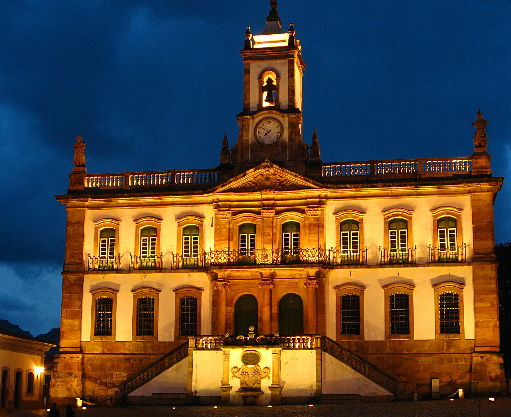
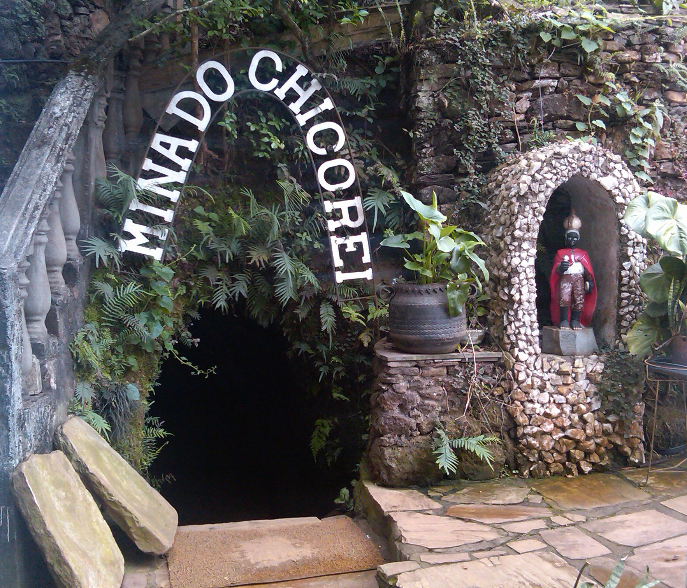

Cidade histórica Patrimônio Mundial da UNESCO, com arquitetura colonial barroca preservada. Suas ladeiras de pedra, igrejas ornamentadas e casarões contam a história do ciclo do ouro no Brasil.

Instalado na antiga Casa de Câmara e Cadeia, o museu preserva a memória da Inconfidência Mineira. Seu acervo inclui documentos históricos, obras de arte sacra e objetos do período colonial brasileiro.
Obra-prima do barroco brasileiro, projetada por Aleijadinho. Suas talhas em cedro e pinturas de Manuel da Costa Ataíde impressionam visitantes do mundo inteiro, representando o auge da arte colonial mineira.

Uma das mais antigas minas de ouro da região, hoje aberta à visitação. O passeio subterrâneo revela galerias históricas e conta a fascinante história de Chico Rei, um rei africano escravizado que comprou sua liberdade.